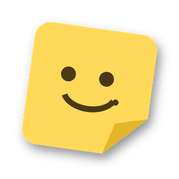

Click-through canvas
Only the notes catch the mouse. Everything else goes straight to the app underneath, so nothing ever blocks you.

NoteItNoteIt draws your notes right on the screen, over any app: clicks pass straight through to whatever is underneath. One shortcut to add a note, one to hide them all.
The installer isn't code-signed yet, so Windows SmartScreen will warn you. Click "More info" and then "Run anyway".
Four things NoteIt gets right so it can live on your screen all day.
Only the notes catch the mouse. Everything else goes straight to the app underneath, so nothing ever blocks you.
Every line is text or a checkbox. Enter adds a line, Enter on an empty box drops it. No modes, no toolbars.
Move and resize the canvas, send it to another monitor, or fit it to the screen. Notes never drift off-screen.
Add a note or hide them all without leaving the app you're in. It lives in the tray and never asks for attention.
They work globally, whichever window has focus. Right-click the tray icon any time to see them again.
Every release, straight from GitHub.